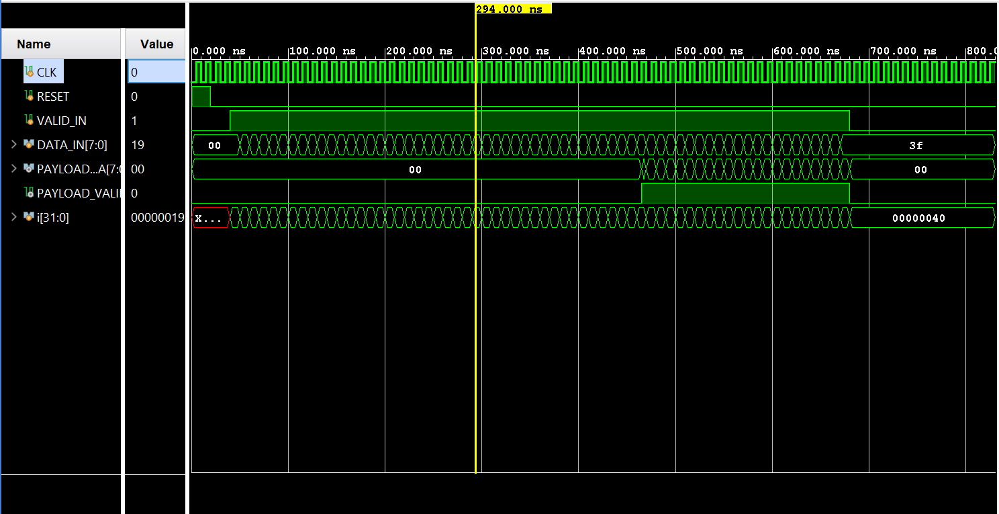
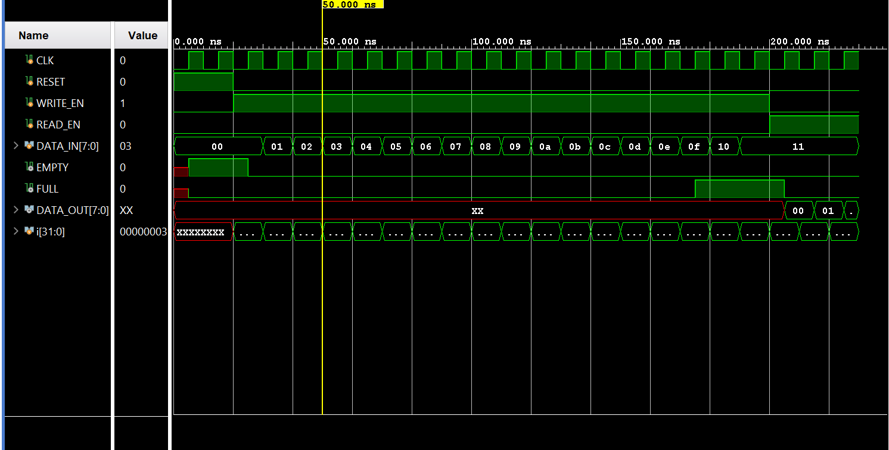

Wire-Speed UDP Packet Parser (FPGA / Verilog)
Verilog • AMD Vivado • Artix-7 FPGA • 5-Stage FSM • Low-Latency Networking
Hardware-accelerated UDP network parser designed in Verilog for deterministic, single-cycle-per-byte packet processing.

Built in AMD Vivado targeting an Artix-7 FPGA (xc7a35tcpg236-1), this 5-stage Finite State Machine parses incoming 8-bit packet streams at 100 MHz (10 ns clock period). As shown in the behavioral simulation above, the hardware strips the 42-byte Ethernet, IPv4, and UDP headers in real time before asserting PAYLOAD_VALID and streaming extracted payload bytes on PAYLOAD_DATA[7:0] with zero bubble cycles.
Synchronous FIFO Memory Buffer (FPGA / Verilog)
Verilog • AMD Vivado • Digital Logic • Memory Architecture
16-byte synchronous First-In, First-Out (FIFO) memory buffer built for deterministic hardware data queuing.

Designed and verified in AMD Vivado at 100 MHz to buffer byte streams between low-latency hardware stages. The simulation verifies reset initialization (EMPTY asserted), sequential 8-bit writes (0x00 through 0x0F) under WRITE_EN until FULL asserts at capacity, and ordered readback on DATA_OUT[7:0] immediately upon asserting READ_EN.
Porsche Model
Fully modeled Porsche 911 in Fusion 360.
The Porsche 911 was designed entirely in Fusion 360 using advanced surface modeling techniques. I focused on replicating accurate proportions and details based on real-world references, followed by high-quality rendering to showcase its aesthetics. I followed a 4 part tutorial to model this car and learned about mesh style for creating 3D objects: YouTube Tutorial.
Engine Model
This engine was entirely modeled by me, showcasing my ability to design complex mechanical parts.
This engine model was created using precise CAD techniques in Fusion 360 to demonstrate its realistic mechanical structure.
Spring Model
This spring was modeled focusing on structural accuracy and spring dynamics.
This model highlights my proficiency in creating mechanical components with detailed precision and proper scaling.
Physics Simulation
This simulation demonstrates my understanding of physics and coding. I added my own details to enhance the provided base code.